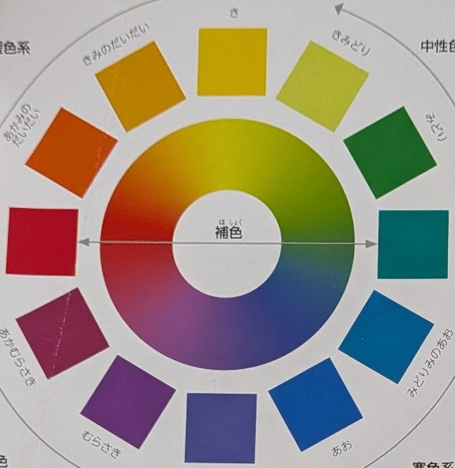
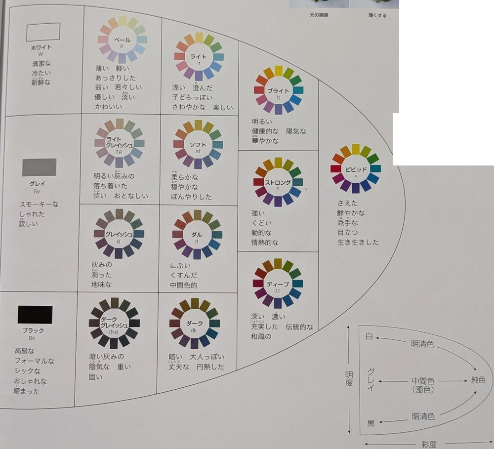
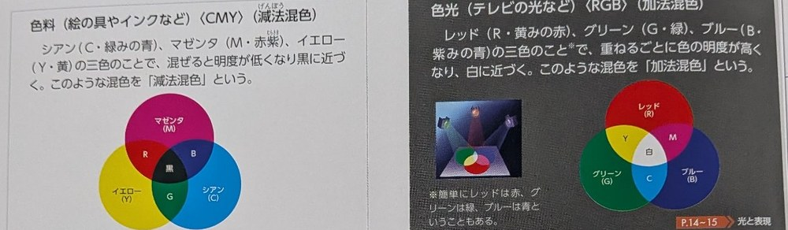
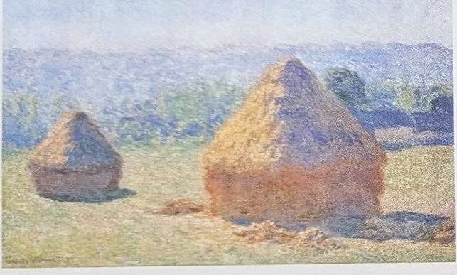
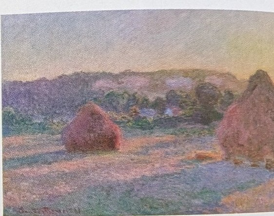

中1美術 暗記シート｜期末テスト正式範囲
美術資料P3〜6「色の整理」／P114〜115「光に色をみつけた」／手のデッサン（実技・鉛筆が必要）｜テスト：11/17（火）
この範囲で学ぶこと
今回の範囲は、大きく3つです。
- 色の整理：色を整理するための考え方（色相・明度・彩度の三属性、色相環、トーン、三原色と混色、配色の工夫）を覚える。色の仕組みが中心なので、図で理解するのが近道
- 光に色をみつけた：19世紀後半の印象派が、光と色をどのように描いたかを押さえる
- 手のデッサン：実技。よく観察して描く手順とポイントを押さえる
このシートだけで範囲全体を勉強できるよう、図と表で丁寧に整理しました。まずは全体を読んで色の仕組みをつかみ、最後のチェックリストで確認しましょう。
1．色の三属性（色相・明度・彩度）
色は、次の3つの性質（三属性）の組み合わせで表すことができます。
| 属性 | 意味 | 例・見分け方 |
|---|---|---|
| 色相 （しきそう） | 赤・黄・青のように、色合いそのものを区別する性質 | 「何色か」を答えるときの性質。色相が違えば別の色 |
| 明度 （めいど） | 色の明るさの程度。高いほど明るく、低いほど暗い | 白に近づくほど明度が高い。同じ赤でも明るい赤と暗い赤がある |
| 彩度 （さいど） | 色の鮮やかさの程度。高いほど鮮やかで、低いほどくすむ | 鮮やかな赤と、灰色まじりのくすんだ赤の違いは彩度 |
資料集では、用語が次のように定義されています。定義は資料集の文のまま覚えましょう。
| 用語 | 資料集の定義 |
|---|---|
| 色相 | 赤みの色、青みの色などの有彩色の色み（色あい） |
| 明度 | 明るさの度合いをいう。すべての色の中で白がもっとも高く、黒がもっとも低い |
| 彩度 | 色の鮮やかさの度合い |
| 純色 | 各色相の中でもっとも彩度の高い色 |
| 明清色 | 純色に白だけが混ざった色 |
| 暗清色 | 純色に黒だけが混ざった色 |
| 濁色 | 純色に灰色が混ざった色。中間色ともいう |
色の三要素（色相・明度・彩度）を三つの軸によって三次元の立体に表したものを色立体といいます。また、無彩色は明度のみで、色相と彩度はないことも、資料集の大切な言い方です。
- 「鮮やかな赤 ↔ くすんだ赤」の違いは彩度。「明るい赤 ↔ 暗い赤」の違いは明度
- 色を言葉で正確に伝えるときは、「色相＋明度＋彩度」の3つで表す
「鮮やかな赤とくすんだ赤の違いは三属性のどれか」のように、具体例から属性名を答えさせる問題が定番です。答えは彩度です。
2．色相環と色の関係（補色・類似色）
色相環は、有彩色を色みの似ている順番に並べたときにできる環のことです。色相環を使うと、色と色の関係（近い・向かい合う）が一目で分かります。
図1：色相環（12色）。となり合う色は似た色合い、向かい合う色は反対の性質をもつ

資料集の色相環（本物）：色名つきの12色の並び。中心の両矢印が補色の関係（赤⇔青緑）を示す
- 色相環の並びは、虹の色の順序（赤→橙→黄→緑→青→紫）と同じ流れ。間に橙・黄緑・青緑・青紫などをはさんで細かく並べたものが12色の色相環です
- 補色：色相環で向かい合いに位置する色の組み合わせ（例：赤と青緑、青と橙、黄と紫）。並べると互いの色を鮮やかに引き立て合う。また、補色どうしを混ぜると、無彩色に近い色になる。目立たせたいときに効果的
- 類似色：色相環で近くに位置する色の組み合わせ（例：青と青緑）。色合いの差が小さいので調和しやすく、落ち着いた印象になる
図2：補色は互いを引き立てて目立つ配色。類似色はなじんで落ち着く配色
- 目立たせたいとき：ポスターのタイトルなど、大切な部分に補色を使うと、周りから浮き出て目立つ
- 強すぎるときは面積で調整：補色どうしを同じ面積で並べると強すぎることがある。一方の面積を小さくするとバランスがとれる
- 統一感を出したいとき：類似色を中心にまとめると、落ち着いた統一感のある配色になる
色相環の図を見て「向かい合う色の組み合わせを何というか」「落ち着いた印象にするにはどの組み合わせか」を答える問題が中心です。補色＝向かい合う・引き立て合う、類似色＝近い・調和するをセットで覚えましょう。
3．トーンと色の印象（無彩色・有彩色／暖色・寒色）
トーンとは、明度と彩度を組み合わせて表す色の調子（色調）のこと。同じ色相でも、トーンが変わると受ける印象が大きく変わります。
図3：トーンの表。上へ行くほど明度が高く（明るく）、右へ行くほど彩度が高い（鮮やか）

資料集のトーン分類図（本物）：トーンは明度と彩度の違いで分類でき、同じトーンの色は人に与える印象が共通する。右下は、白→明清色、グレイ→中間色（濁色）、黒→暗清色の関係図
- 明度が高い＋彩度が低いトーン：淡く、やさしい・軽い印象
- 明度も彩度も高いトーン：明るく鮮やかで、元気な印象
- 明度が低いトーン：暗く、落ち着いた・重い印象
- 同じ赤でも、淡いピンクに近い赤、鮮やかな赤、暗いえんじ色では印象がまるで違う。これがトーンの違いです
- ビビッド：純色そのものの調子。さえた・鮮やかな・派手な・目立つ印象
- ペール：明清色中心。薄い・軽い・優しい・淡い印象。ライトは浅い・澄んだ、ブライトは明るい・健康的・華やかな印象
- ダル：濁色中心。にぶい・くすんだ・中間色的な印象。グレイッシュは灰みの・濁った・地味な印象
- ダーク：暗清色中心。暗い・大人っぽい・円熟した印象。ディープは深い・濃い・充実した、ストロングは強い・動的・情熱的な印象
- そのほかに、ソフト／ライトグレイッシュ／ダークグレイッシュがあり、無彩色のトーンはホワイト・グレイ・ブラック
- 純色に白を混ぜると明清色、黒を混ぜると暗清色、灰色を混ぜると濁色（中間色）になる（分類図の右下の関係図）
| 分類 | 意味 | 例 |
|---|---|---|
| 無彩色 | 色相と彩度をもたない色。明度だけで表される | 白・灰色・黒 |
| 有彩色 | 色相をもつ色。三属性すべてで表される | 赤・黄・青・緑など |
| 暖色 | 暖かさを感じる色 | 赤・橙・黄など |
| 寒色 | 涼しさや寒さを感じる色 | 青・青緑・青紫など |
暖色と寒色の中間あたりにある緑や紫は、まわりの色との関係で暖かくも寒くも感じられることがあります（中性色と呼ばれることもあります）。
図4：暖色と寒色の色見本
「白・灰色・黒をまとめて何色というか。理由も答えなさい」という形で、用語と理由のセットで聞かれます。答えは「無彩色。色相と彩度をもたず、明度だけで表されるから」です。
4．三原色と混色／色の対比／配色の工夫
三原色とは、色と色を混ぜてもつくることができない色のことです。三原色があれば、ほとんどの色をつくり出すことができます。色料（絵の具やインク）と色光（テレビの光など）では、三原色も混色の名前も違います。
| 種類 | 三原色 | 混色と特ちょう |
|---|---|---|
| 色料の三原色 （絵の具やインクなど） | シアン（C・緑みの青） マゼンタ（M・赤紫） イエロー（Y・黄） | 減法混色：混ぜると明度が低くなり、黒に近づく |
| 色光の三原色 （テレビの光など） | レッド（R・黄みの赤） グリーン（G・緑） ブルー（B・紫みの青） | 加法混色：重ねるごとに色の明度が高くなり、白に近づく |

資料集の三原色（本物）：左が色料（CMY・減法混色）、右が色光（RGB・加法混色）。重なった部分の色の違いに注目
色の対比とは、同じ色でも、周囲の色によって違った感じに見えることです。資料集では4種類に整理されています。
| 対比 | 見え方（資料集の説明） |
|---|---|
| 明度対比 | 同じ明度の色も、暗い背景の中では明るく、明るい背景の中では暗く感じて見える |
| 色相対比 | 同じ色相の色も、背景の色相の違いで、色相の感じが違って見える |
| 彩度対比 | 同じ彩度の色も、低い彩度の背景の中では鮮やかさを増し、高い彩度の中ではにぶく見える |
| 補色対比 | 同じ彩度の色も、補色関係の背景の中では鮮やかさを増して見える |
- 色の進出・後退、膨張・収縮：同じ大きさの色面でも、一般に暖色系で明度や彩度の高い色は膨張して大きく感じ、前に進出して見える。また寒色系の色は収縮し、後退して見える
- 補色残像：色をしばらく見つめたあと目を移すと、その色の補色が残像となってぼんやり見える現象
- 色の感情：寒い・暖かいの感じは色相と関係が深く、軽い・重いの感じは明度と、強い・弱いの感じは彩度と関係が深い
- 色相による配色：同一色相（融和的でまとまりやすいが、単調になりやすい）／類似色相（色相環で近い位置関係。一般に、おだやかで落ち着いた感じ）／対照（対立）色相（間隔の大きい色どうし。相互に引き立てて、強く刺激的な感じ）／補色色相（真向かい。激しく刺激的になり、純色どうしだととくに強く感じる）
- トーンによる配色：同一トーン・類似トーン・対照トーンというように、トーンの関係で考える
- 主調色（ドミナントカラー）：画面全体の色の調子を支配している色。まず表したい感じにもとづいて、この主調色を決めるとよい
- 強調色（アクセントカラー）：一部に、反対の性質の色を置き、全体の感じを引き締める色
- セパレーション（分離の効果）：色と色の間に無彩色を入れると、それぞれの色を独立させ、強烈すぎる配色を和らげたり、弱すぎる配色を引き締めたりする
- 並置混色：細かい色点を並べて、遠く離れて見ると、混色された色が見える表し方（印象派の点描法と同じ考え方）
- そのほかの色の効果：透明視（実際に透明なものを使わず、配色で透明な印象を与える）／ムンカー錯視（地の色の組み合わせによって、文字の色あいが違って見える）
「色料の三原色を3つ答えなさい」「減法混色と加法混色の違い」「主調色と強調色の意味」のように、用語と意味のセットで聞かれます。CMYは混ぜると黒に近づく（減法）、RGBは重ねると白に近づく（加法）という向きを間違えないこと。
5．「光に色をみつけた」印象派
印象派は、19世紀後半のフランスを中心に活動した画家たちのグループです。それまでの「決まった固有色で塗る」描き方から離れ、刻々と変化する光の様子と、その中での色の見え方を描こうとしました。
- 戸外で描く：アトリエ（室内）で仕上げるのではなく、屋外に出て、太陽の光の下で変わり続ける風景の色や空気の様子をその場でとらえようとした
- チューブ入り絵の具の発明：1840年代に金属製のチューブ入り絵の具が考案され、絵の具を持ち運べるようになりました。この発明が戸外での制作を可能にし、印象派の誕生に大きな役割を果たしました
- 同じ場所をくり返し描く：時刻や天気で光が変わると色も変わるため、同じモチーフを時間帯を変えて何枚も描いた画家もいる
- 影にも色がある：影を黒や茶だけで塗らず、青や紫など、色みのある色で表現した。光の当たる部分との対比で、光の明るさが感じられる
図5：筆触分割のイメージ（左）と、影の表し方の違い（右）
筆触分割とは、色を混ぜずに、小さな筆のタッチを並べて置く技法です。離れて見ると、見る人の目の中で色が混ざって見えます。パレットの上で色を混ぜるより濁りにくく、光のきらめきのような効果が得られます。
この筆触分割を、さらに細かな点の集まりにまで徹底し、色彩の理論にもとづいて科学的に推し進めたのが、印象派に続く新印象派です。代表はジョルジュ・スーラ。細かな点状に色彩を並べる描き方を点描法、パレットの上で混色するのではなく色を点状に並列して置き、離れて見たときに見る人の視覚の中で混ざって見える表し方を並置混色といいます。
| 画家 | 特徴・代表作 |
|---|---|
| モネ | 印象派の中心的な画家。「印象・日の出」は、「印象派」という名前の由来になった作品。「散歩、日傘をさす女」や、同じモチーフを光の変化で描き分ける連作「積みわら」でも知られる |
| ルノワール | 人々の集まる場面や人物を、明るい光とやわらかな色で描いた。代表作「ムーラン・ド・ラ・ギャレットの舞踏会」は、木もれ日の中の屋外ダンスホールを描いた作品 |
| スーラ | 新印象派の中心的な画家。代表作「グランド・ジャット島の日曜日の午後」は、点描法（並置混色）で描かれた作品 |
- 活動の中心は19世紀後半のフランス。当時は新しい描き方として批判されることも多かった
- 印象派の考え方（光と色を目でとらえる）は、その後の美術に大きな影響を与えた
🖼 絵と題名と作者をつなげて覚える（資料集P114〜115の7作品）
テストでは、絵を見て作品名と作者名を答える問題が出ます。絵の特徴（見分けポイント）とセットで覚えましょう。

見分け：朝もやの中の港と、水面に映る赤い太陽。「印象だけで何を描いているか分からない」という当時の批評から、「印象派」の名称が生まれた作品。

見分け：緑の日傘をさす女性と子ども。波打つ草、横からの風、雲の動きなど、瞬間の情景を軽いタッチで効果的に描いている。

見分け：連作「積みわら」の1つ。朝の淡い光の中で、積みわらが明るく輝いて見える。

見分け：同じ積みわらを白昼の強い日差しで描いたもの。色がはっきりし、影が濃い。

見分け：同じ積みわらを夕方の光で描いたもの。全体が赤みを帯びる。3・4・5は同じモチーフを光の変化で描き分けた連作。

見分け：新印象派の代表作。近づくと全面が細かな点（点描法）でできている。日傘の人々が休日を過ごす公園の情景。

見分け：モンマルトルの庶民的な屋外ダンスホール。木もれ日の光が人々や地面にまだらに当たり、生き生きとした表情を生んでいる。
「筆触分割とはどのような技法か」「印象派が影を描くときの特徴」「『印象派』の名前の由来になった作品と作者」の3点が定番です。モネ＝「印象・日の出」は必ずセットで覚えましょう。加えて、絵を見て作品名と作者名を答える図版問題も出ます。上の7作品は、絵の特徴とセットで覚えましょう。
6．手のデッサン（実技）｜観察の手順
手のデッサンは実技です。当日は鉛筆が必要です。デッサンは「上手に描く」前に、よく見る（観察する）ことが大切です。次の手順で進めると、全体が整いやすくなります。
- 全体の形とバランスをとらえる：最初は細部を描かず、手全体の大きさと、手のひらと指の長さの割合を、薄く大きくとらえる
- 関節と方向を見る：指の関節の位置、指がどの方向に曲がっているかを観察する。指はまっすぐな棒ではなく、関節ごとに方向が変わる
- 明暗を決める：光の向きを見て、一番明るい所と一番暗い所を決める。面ごとに濃淡をつける
- 面で形を表す：輪郭線だけでなぞるのではなく、面の向きの変化に合わせて濃淡を変え、立体感を出す
- 細部を描き分ける：つめ・しわ・骨の出っぱりなど、その手ならではの特徴を観察して描く
- 影にも差をつける：影の部分を全部同じ濃さで塗らず、影の中にも濃淡の差をつける
- □ 手のひらと指の長さの割合は合っているか
- □ 指の関節の位置と曲がる方向を見て描いているか
- □ 一番明るい所・暗い所を決めてから濃淡をつけているか
- □ 輪郭線だけに頼らず、面の向きで形を表しているか
- □ つめ・しわ・骨の出っぱりなど細部の特徴を描き分けているか
- □ 影の中にも濃淡の差があるか
実技なので、知識問題ではなく描いたデッサンそのもので評価されます。「形の割合」と「光の向き（明暗）」を先に決めることが、一番の得点ポイントです。
- 明度と彩度の混同：「明るい・暗い」は明度、「鮮やか・くすむ」は彩度。例文で判断する
- 補色と類似色の取り違え：補色は色相環の向かい側、類似色は近く。効果も逆（引き立て合う／調和する）
- 無彩色の定義：白・灰色・黒は「色がない」のではなく、色相と彩度をもたない色。明度はある
- トーン＝明度＋彩度。色相は含まない
- 印象派の影は黒や茶だけではない。青や紫など色みのある色で表した
- 「印象派」の由来はモネの「印象・日の出」。画家名と作品名をセットで
- 積みわら3点は同じモチーフの連作：朝の効果（淡い朝の光）・白昼（強い日差しと濃い影）・夏の終わり（夕方の赤み）で見分ける
- スーラは新印象派：印象派のモネ・ルノワールと取り違えない。点描法（並置混色）が目印
- 減法混色と加法混色の取り違え：色料（CMY）は混ぜると黒に近づく、色光（RGB）は重ねると白に近づく
- 主調色と強調色の取り違え：主調色は画面全体を支配する色、強調色は一部に入れて全体を引き締める色
- □ 三属性（色相・明度・彩度）の意味を、それぞれ一言で言える
- □ 色相環で、補色と類似色の位置関係を説明できる
- □ トーン＝明度と彩度の組み合わせ、と言える
- □ 無彩色と有彩色の違いを言える
- □ 暖色と寒色の例を、それぞれ3つ言える
- □ 筆触分割の仕組みを説明できる
- □ モネと「印象・日の出」を結びつけて言える
- □ 7作品を、絵を見て題名と作者が言える
- □ 純色・明清色・暗清色・濁色の意味を言える
- □ 三原色（色料CMY・色光RGB）と、減法混色・加法混色の違いを言える
- □ 主調色・強調色・セパレーションの意味を言える
- □ デッサンの手順（全体→関節→明暗→面→細部）を言える
- □ 当日の持ち物：鉛筆を用意した